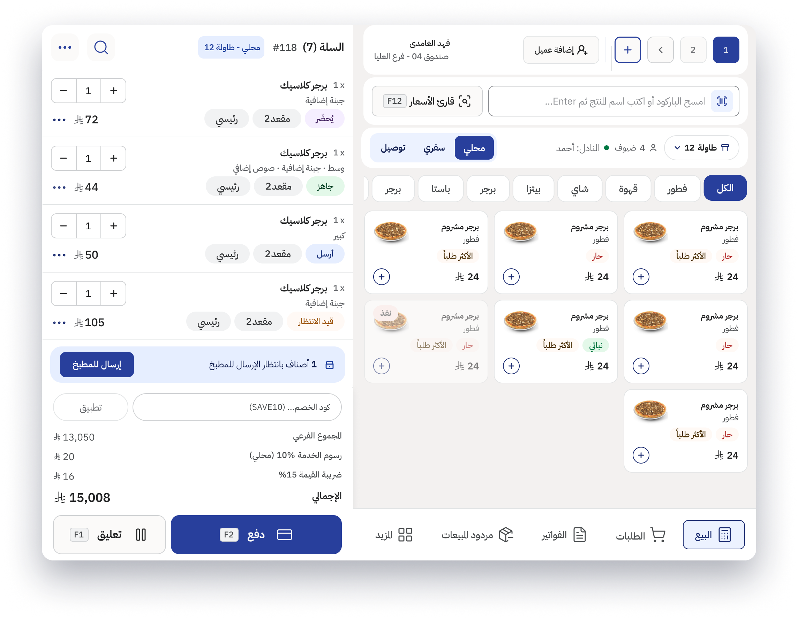
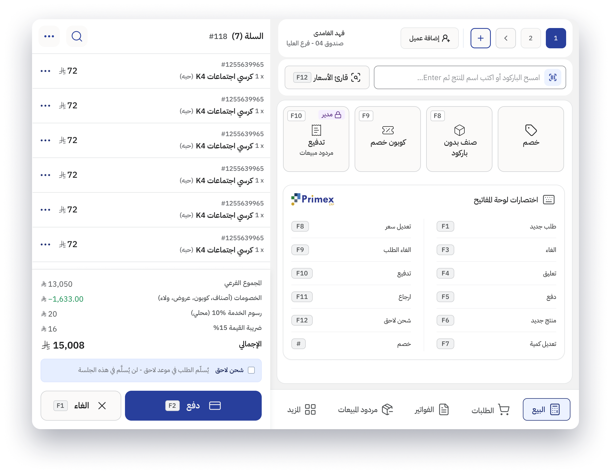

Cashier POS, decoupled from an ERP
I took the Cashier POS out of a full ERP platform and made it its own product, running on tablets and cashier screens. An interface finally built for the pace of the counter.
The short version
- Pulled the Cashier POS out of the Primex ERP and turned it into a standalone product for tablets and cashier screens.
- The old screen was built for seated back-office staff. Cashiers stand, work fast, and have a queue in front of them.
- One rule drove every decision: does this make checkout faster?
- Built a dedicated POS design system: bigger touch targets, flatter navigation, glanceable components.
- One core, two layouts: browse-first for restaurants, scan-first for hypermarkets.
- Now in validation with the client and a lead cashier, before full rollout.
One module, set free from the monolith
The Cashier POS lived inside Primex, a full ERP platform. It was one screen among dozens, all built for back-office work. I led the design work to carve it out into its own product: Primex POS, running on tablets and dedicated cashier screens, made for the point of sale instead of the back office.
Designed for a desk, used at a counter
The ERP was designed for desk staff: people sitting at workstations, going through deep menus with time to spare. Cashiers live the opposite: standing, rushed, with a queue forming in front of them. The old interface just wasn't built for that.
Touch targets and reach matter more than information density.
Every extra tap happens in front of a waiting customer.
A busy floor punishes any screen that asks for attention.
Speed became the brief
In conversations with the PM and the team, one priority kept coming up above everything else: speed. Not features, not settings. The number of steps, and the mental effort, between "customer arrives" and "receipt printed".
Every design decision was measured against one question: does this make checkout faster, or slower?
Design principle · Primex POS
A dedicated system, a flexible layout
I built a design system just for the POS, separate from the ERP: larger touch targets, a flatter navigation model, and components you can read at a glance. On top of it, I designed one layout that adapts to very different kinds of business.
4A · Restaurant layoutBrowse-first: built for the menu
- Items grouped by category for fast visual browsing
- Order status shown as clear chips in the cart
- Order type picker: Dine-in, Takeaway, Delivery

Scan-first: built for throughput
- The barcode scanner is the main input
- Keyboard shortcuts come before visual browsing
- Made for big catalogs, where search speed beats browsing

Same system, opposite interaction models
The core POS didn't change between businesses. How people use it did. A restaurant sells a small menu people know by sight. A hypermarket sells thousands of items nobody browses. So the layout changes completely: visual browsing on one side, scan-first speed on the other.
Visual browsing
- Primary input
- Touch, tap items
- Catalog
- ~50–200 items, known by sight
- Navigation
- Category grid
- Speed lever
- Recognition over recall
Scan-first speed
- Primary input
- Barcode scanner + keys
- Catalog
- Thousands of SKUs
- Navigation
- Search + F-key shortcuts
- Speed lever
- Muscle memory, no looking
In validation, before rollout
The product is in its validation phase. I'm collecting feedback from the client and a lead cashier, the person who will live in this interface every day, before it rolls out to the wider team. What they notice on real transactions will drive the last round of refinements.
- Decoupled & designed
- Validation with the client + lead cashier
- Full rollout